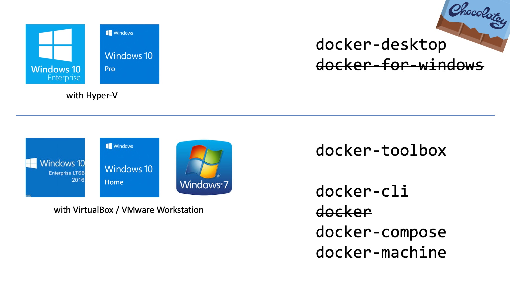

When I'm working with Windows I love to have a standarized way to install software. Did you remember how we have set up our dev machines a few years ago? Well, about five years ago I found this blog post by security expert Troy Hunt and his 102 simple steps for installing and configuring a new Windows 8 machine showed most of the time cinst this and cinst that. This opened my eyes, wow there is a package manager for Windows. Since then I started with automation tools like Packer and Vagrant to describe repeatable development and test environments. This also lead me to contribute back to the Chocolatey community repository, because I just couldn't cinst packer at that time. So I wrote my first Chocolatey package which is very easy as it only links to the official download URL's from the software vendor.
In these five years I went through several Windows machines and contributed missing Choco packages also for installing the Docker tools I needed.
Overview
The following diagram shows you the most relevant Chocolatey packages for Docker. I'll give you a little bit of history and explain why they all exist in the following chapters.

Docker
The first Docker tool that landed as a Chocolatey package was the Docker CLI. Ahmet Alp Balkan working at Microsoft at that time ported the Docker CLI to Windows so we had the docker.exe to communicate with remote Docker engines running in a Linux machine. This package was and still is called docker.
Nowadays it might be confusing if people want to run choco install docker and 'just' get the Docker CLI without any Docker Engine. We're in discussion with the Chocolatey team how to softly fix this and transfer the Docker CLI into a new package name called docker-cli to make it more clear.
Docker Toolbox
Docker, Inc. created Docker Toolbox to have all tools and also VirtualBox bundled together. Manuel Riezebosch started a Chocolatey package docker-toolbox for it and still maintains it.
This package is usable for people that cannot run the newer Docker Desktop product. The reasons could be
- Still running Windows 7
- Running a Windows 10 Home or LTSB version which is too old
- Running VirtualBox VM's for other tasks that prevent the installation of Hyper-V
Machine, Compose, ...
I worked with VMware Workstation for years so the Docker Toolbox wasn't my thing. I knew that there is a tool called docker-machine to create Linux VM's with the boot2docker.iso file. That's why I started with the Choco packages for docker-machine, helped maintaining the docker-compose package and added some Docker Machine drivers as Chocolatey packages docker-machine-vmwareworkstation and docker-machine-vmware as well.
This is the fine granular approach to install only the tools you need, but still using the choco install experience.
Docker for Windows
Manuel Riezebosch started a Chocolatey package docker-for-windows which is an excellent work. You can install "Docker for Windows" product with it which is the successor of "Docker Toolbox". But please read the next section to grab the latest version of it.
Docker Desktop
With the new release of Docker Desktop 2.0 for Windows 10 Pro/Enterprise there is also a change in the name. The product "Docker for Windows" has been renamed to "Docker Desktop". It also gets a new version format.
That's the reason to start with a new Choco package name. Please unlearn docker-for-windows and just use choco install docker-desktop to get the latest version on your machine.
Thanks Manuel Riezebosch for mainting this choco package!
Windows Server?
If you want to install Docker on a Windows Server 2016 or 2019, there is no Chocolatey package for it.
Please read Windows Containers on Windows Server installation guide from Microsoft or the Docker Enterprise Edition for Windows Server guide from the Docker Store.
TL/DR
The best experience with Docker on a Windows 10 machine is using the Docker Desktop product. Try to grab an up-to-date Windows 10 Pro machine to be all set for it and then run
choco install docker-desktop
Otherwise jump over to https://chocolatey.org/search?q=docker and grab one of the other Docker related Chocolatey packages.
I hope this overview of all the Chocolatey packages will give you a better understanding of what is right for your needs. I would love to hear your feedback so please leave a comment below or ask me on Twitter.